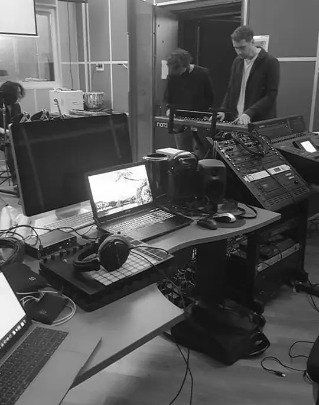

Sfaera
Jeux Vidéo
Mon rôle : Développeur & Sound Design
Sfaera est un jeu vidéo à la première personne qui invite les joueurs à explorer des systèmes solaires surréalistes. Chaque élément de cet univers (planètes, soleil, astéroïdes) comporte une identité sonore qui lui est propre. Le joueur peut décider de se rapprocher d'un de ces objets pour tendre l'oreille sur un élément précis ou au contraire prendre du recul pour avoir une écoute d'ensemble. A son état d'équilibre, les planètes gravitent paisiblement autour du soleil, donnant vie à une partition stellaire disciplinée.
Le joueur a alors la possibilité d'interagir avec les objets qui l'entourent ou de créer de nouveaux éléments. Ces actions vont venir perturber l'équilibre du système solaire en modifiant les orbits, les vitesses et les tailles des objets. Autant de paramètres qui auront une influence sur la composition sonore créée par le système.

A la fois ludique et immersif, ce jeu encourage à l'expérimentation sonore : Vais-je tenter de créer un nouvel équilibre rythmique, timbrale et harmonique ou au contraire, vais-je préférer trouver la beauté dans le chaos ?
Sfaera a été développé au laboratoire PRISM, il met en avant l'utilisation de l'audio procédural à l'aide de synthèse par modèle physique. Chaque élément de l'univers est un synthétiseur à part entière. Il fut développé grâce au moteur de jeu Unity, le moteur audio FMOD et plusieurs plugins audio développés pour l'occasion sur JUCE.
Crédits
- Gestion de projet
- Sébastien Dussol
- Direction Artistique
- Aki Yamouridis
- In Game Developper
- Jean Le Bellego et Mathis Damnon
- Plugin, Software Developper
- Jean Le Bellego et Denis Charrier
- Sound design
- Jean Le Bellego et Mathis Damnon
- Compositions
- Angelo Bayraktar, Denis Charrier, Jean Le Bellego